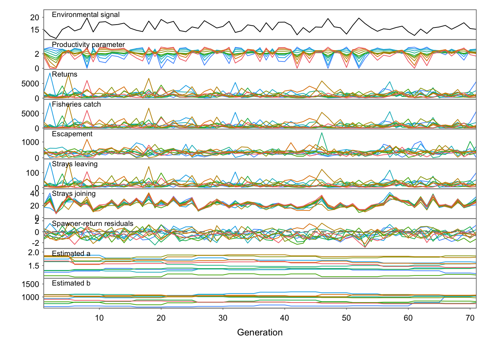
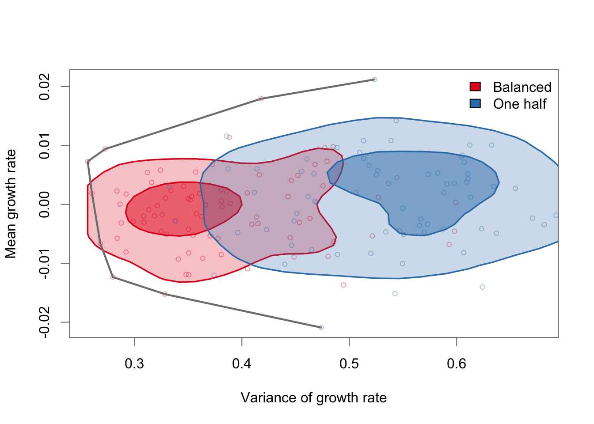
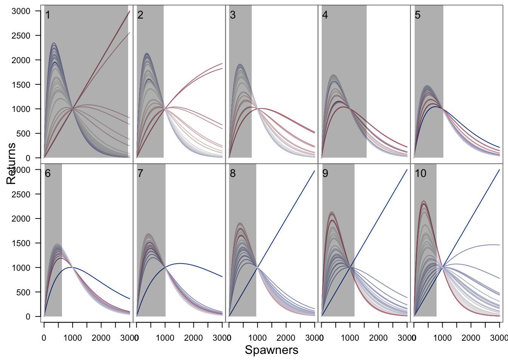

library(metafolio)
## These are the references for the package! When you run these three lines of code the vignette will pop up in another window and the help window window in R will pop up in the bottom right corner.
vignette("metafolio")
?metafolio
help(package = "metafolio")Portfolio 11 - Metafolio
Metafolio Notes: - metapopulation analysis - great for salmon populations - Uses a ricker model, which can be widely used by different organisms, but has its limitations - can be used to compare conservation strategies, and see how the species may respond - inital results show a time series of different variables. This is helpful if there are only a few populations, but if there are a lot then it is hard to see. - Data needed: abundance data for each population and environmental data - there is some data built in to the package, so can use that as a guide/for examples - Lots of great resources: vignette, manual, and a paper that explains the analysis further with the same example as the vignette
Portfolio Assignment:
##.......................Part 1 - Creating Baseline Portfolios..........................................
arma_env_params <- list(mean_value = 16, # mean
ar = 0.1, # auto regressive parameter
sigma_env = 2, # std deviation of env signal
ma = 0) # moving average parameter
## We are simulating portfolios so there's no data needed for this! This function is helping create a base case scenario based on environmental parameters from the literature.
base1 <- meta_sim(n_pop = 10, # simulation with 10 populations
env_params = arma_env_params, # input environmental parameters that were created above
env_type = "arma", # use an arima model; run '?arima' in the console to learn more about arima models
assess_freq = 5) ## re-assess the fishery every five years.
## This is generating a predictive time series of the status of the simulated portfolio based on previous data (Which is why the fishery is being reassessed periodically).
plot_sim_ts(base1, years_to_show = 70, burn = 30) ## Plotting the time series of the simulated metapopulations and their predictive environmental parameters over 70 years
Q1 Answer: As n_pop gets larger, the output graph gets busier. Each line on the graph represents a different population. If there are a high number of populations, it can be challenging to differentiate between them in the plot.
##.......................Part 2 - Exploring Prioritization Strategies...................................
w_plans <- list() ## Making this a list to run a for loop over all our portfolios
## We are going to manipulate the investment weights in each stream by changing the b_i parameter in the ricker model. Since b_i is the carrying capacity of each population, we will use the maximum value 1000.
w_plans[["balanced"]] <- c(5, 1000, 5, 1000, 5, 5, 1000, 5,1000, 5) ## Here we have 10 populations. 1000 means we want to conserve that population. 5 means we do not want to conserve the population. We are then choosing to conserve a balance metapopulation
## (Hint: Play around with these numbers to see how the portfolios change in the end)
w_plans[["one_half"]] <- c(rep(1000, 4), rep(5, 6)) ## Here we are conserving the first 4 populations. We are not conserving the other 6 populations.
w <- list() ## Making a list of stream capacities
for(i in 1:2) { # loop over plans
w[[i]] <- list()
for(j in 1:80) { # loop over iterations
w[[i]][[j]] <- matrix(w_plans[[i]], nrow = 1)
}
}
set.seed(1)
arma_sp <- run_cons_plans(w, env_type = "arma", env_params = arma_env_params) ## Running the simulated portfolios using the different prioritization weights from aboveCompleted 1 of 2 conservation plans to evaluateCompleted 2 of 2 conservation plans to evaluateplot_cons_plans(arma_sp$plans_mv,
plans_name = c("Balanced", "One half"),
cols = c("#E41A1C", "#377EB8"), xlab = "Variance of growth rate",
ylab = "Mean growth rate") ## Plotting the simulated the portfolios
Q2 Answer: This shifts the output left and up on the graph, meaning that it reduces the variance and increases the returns. This is more optimal because a portfolio manager would be increasing abundance more with that conservation strategy, while accepting less risk. Risk in this situation is bad. The efficiency frontier does not shift very much, which makes sense because the overall portfolio points do not change much. The portfolio that is to the left is more optimal because it accepts less risk.
##.......................Extra - The code for the Ricker plots shown in class...................................
plot_rickers(base1, pal = rep("black", 10)) ## Spawners on x axis and Returns on y axis. Each panel represents 1 portfolio with their thermal tolerances.
Q3 Answer: Any water quality parameters, such as turbidity or stream flow rate. When applying to other organisms, want to be sure to select specific env parameters that are import and species to that species.